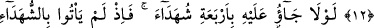
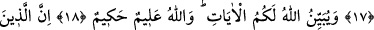

İFK HÂDİSESİ:
AĞIR BİR İFTİRÂ
11. (Peygamber’in eşine) bu ağır iftirâyı uyduranlar şüphesiz sizin içinizden bir
guruptur. Bunu kendiniz için bir kötülük sanmayın, aksine o, sizin için bir iyiliktir.
Onlardan her bir kişiye, günah olarak ne işlemişse (onun karşılığı cezâ) vardır.
Onlardan (elebaşlık yapıp) bu günahın büyüklüğünü yüklenen kimse için de çok
büyük bir azâb vardır.
12. Bu iftirâyı işittiğinizde erkek ve kadın müminlerin, kendileri hakkında
hüsnüzanda bulunup da: “Bu, apaçık bir iftirâdır” demeleri gerekmez miydi?
13. Onların (iftirâcıların) da bu konuda dört şâhid getirmeleri gerekmez miydi?
Madem ki şâhidleri getiremediler, öyle ise onlar Allah nezdinde yalancıların ta
kendisidirler.
14. Eğer dünyada ve âhirette Allah’ın lütuf ve merhameti üstünüzde olmasaydı,
içine daldığınız bu iftirâdan dolayı size mutlaka büyük bir azâb isâbet ederdi.
15. Çünkü siz bu iftirâyı, dilden dile birbirinize aktarıyor, hakkında bilgi sâhibi